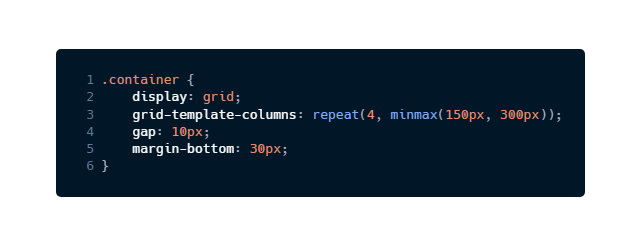

O minmax efetua um cálculo para definir o valor mínimo e o valor máximo de alguma propriedade.
O mesmo princípio pode ser utilizado no atributo grid-template-columns:
As medidas continuam se adequando ao conteúdo e a barra de rolagem é criada automaticamente para que a medida seja mantida.